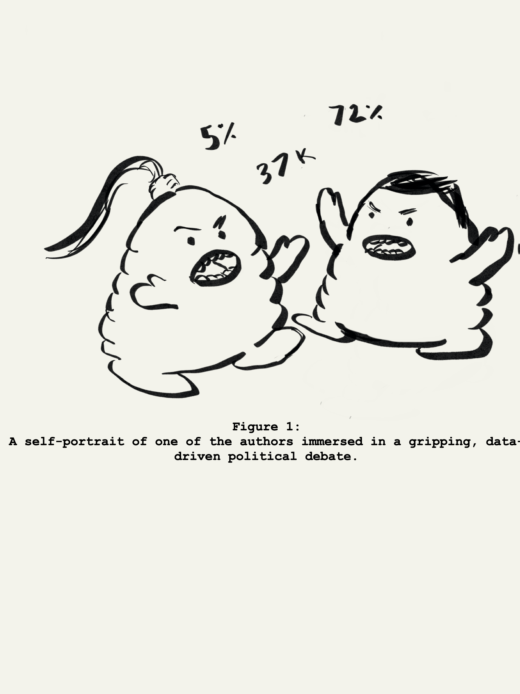

Welcome!
While there is no end to data-driven reporting on US voter behavior, too often statistical nuance is sacrificed to make a more enticing story. Our website is an attempt to inject that nuance back into these potentially polarizaing conversations, with two audiences in mind:
-
High school and college students who are looking to explore quantitative storytelling in the context of civics. We've provided exercises to complement a class that covers basic summary statistcs (averages, medians, and percentiles), with a focus on how outliers and metric choices can complicate temptingly simple political narratives. The hope is that this kind of data literacy translates into a more informed, skeptical citizenry. Exercises can be found on the tabs
Concurrent,
Dropoff,
and
Margins.
-
Consumers of the news, with the typical CNN viewer in mind. With an unceasing barrage of stories and controversies, it's easy to lose sight broader historical trends. We've provided a number of interactive graphics that allow news consumers to explore the inticacies of individual presidential elections (Election Snapshots) as well as historical trends reaching back to 1976 (Election History).
The Data
We use national election data from the
Federal Election Commission.
For the educational exercises, we use House, Senate, and Presidential election data from 2004-2018, and for the election history and snapshots we use Presidential data stretching back to 1976.
The Authors
Kyle Eschen
Tejinderpal Signh
|

|